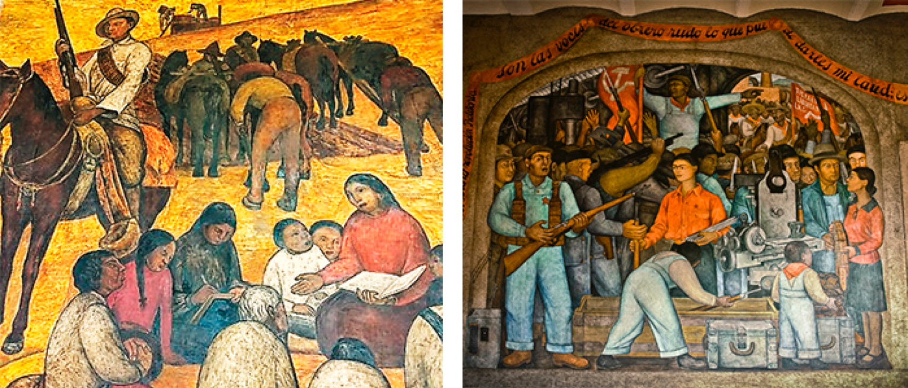

Art. 3º Constitucional
De acuerdo con la Constitución Política de los Estados Unidos Mexicanos, vigente desde 1917, se señala que la educación en México es laica y gratuita.
Este artículo nos garantiza el derecho a la educación a toda persona nacida en el territorio mexicano, con el objetivo de desarrollar un sentimiento patriótico.
Revisa el siguiente video con detenimiento, ya que sintetiza el derecho constitucional a la educación.
ARTÍCULO 3° EXPLICACIÓN-CONSTITUCIÓN MEXICANA (2017) "DERECHO A LA EDUCACIÓN.
Ley General de Educación
Durante el mandato de Carlos Salinas de Gortari surge esta ley que hasta la fecha es vigente, aunque se han hecho algunos cambios, la escencia de la ley es importante.
El derecho a la educación como derecho humano, comprendido en la:
Ley general de educación
¿Sabes qué dice la Ley General de Educación?
Ponemos a tu disposición la Ley General de Educación.
Otras Leyes y reglamentos
Lo relativo a la educación se ve declarado en el Diario Oficial de la Federación, ahí se señalan las leyes y todo aquello relativo que se tendrá que atender por parte de las instituciones y de las personas involucradas en todas las áreas y campos de la educación.
En los siguientes recursos podemos revisar lo que el titular de la Secretaria de Educación Pública, Esteban Moctezuma, dijo sobre la propuesta de modificación a la Constitución, no busca una reforma que después se vuelva a reformar sino un acuerdo nacional, que permita lograr los objetivos que la educación plantea
¿Cómo reforman la reforma educativa?
Nueva reforma educativa buscará cumplir acuerdos con maestros: SEP
Secretaría de Educación Pública
En los primeros decenios del siglo XX, México pasa por una revolución que hace que el país se encuentre en una crisis y no es hasta que éste movimiento concluye y los nuevos dirigentes como el presidente Álvaro Obregón, escucha a José Vasconcelos y se crea la Secretaria de Educación Pública en 1921 como un proyecto para atender la importancia que tiene para el desarrollo del país.
AGREGAR GIF CON LINEA DE TIEMPO
Te invitamos a revisar el siguiente recurso sobre las bases de la educación en México a través de la Fundación de la Secretaria de Educación Pública.
¿Sabías que Diego Rivera fue invitado por José Vasconcelos para trabajar los murales que decoran el edificio de la SEP?
